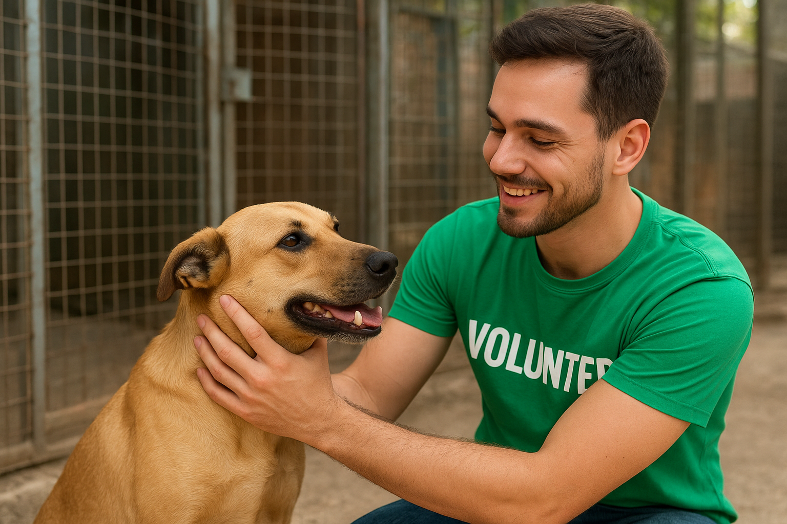

Quem somos
Fundada em 2020, a ONG Esperança nasceu do amor pelos animais e do desejo de transformar realidades. Somos uma organização sem fins lucrativos dedicada a resgatar cães e gatos em situação de abandono, oferecendo cuidados completos e encontrando lares responsáveis onde eles possam viver com carinho, segurança e respeito.
Nossa missão
Salvar vidas, promover o bem-estar animal e incentivar a adoção responsável, construindo uma sociedade mais consciente, empática e livre de maus-tratos.
Nosso Contato
Endereço: Rua das Flores, 123 - São Paulo, SP
Email: contato@ongesperanca.org
Telefone: (11) 1234-5678